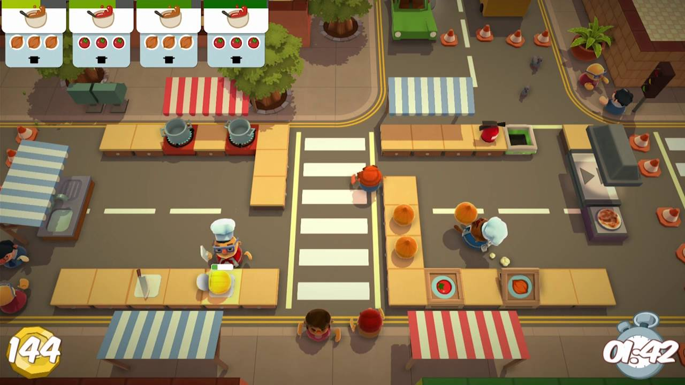
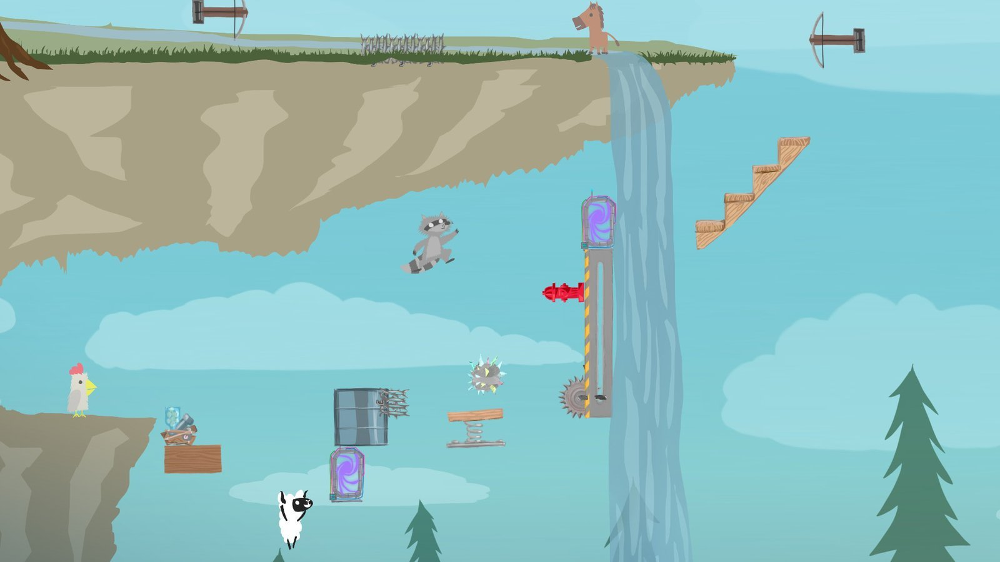
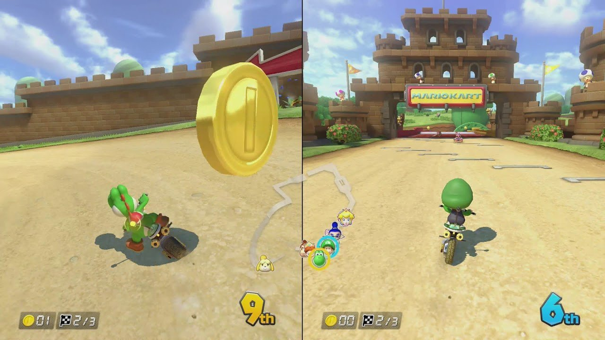
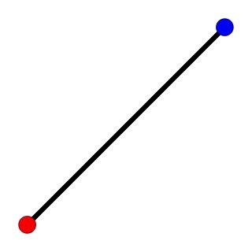
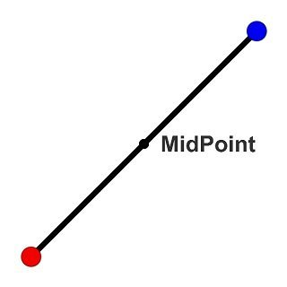
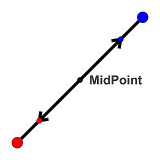
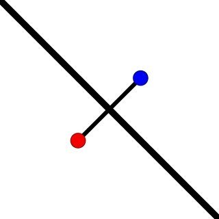
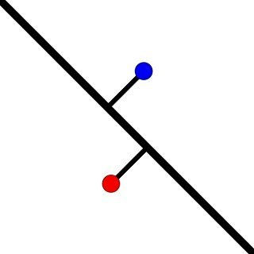
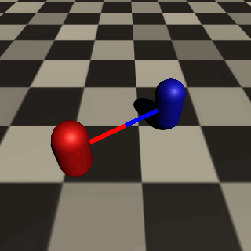

任天堂明星大亂鬥 – 角色超出螢幕範圍時加入提示
任天堂明星大亂鬥 – 角色超出螢幕範圍時加入提示圖片來源
在許多遊戲中，隨著遊玩的人數不同，會根據遊戲特性在畫面中加入一些巧思提高玩家的遊玩體驗。
較常見的做法像是動態調整攝影機位置及範圍、角色超出螢幕範圍時加入提示、畫面水平分割、及畫面垂直分割…等。

煮過頭 – 動態調整攝影機位置
超級雞馬 – 動態調整攝影機位置、範圍任天堂明星大亂鬥 – 角色超出螢幕範圍時加入提示
圖片來源

馬力歐賽車8 – 畫面垂直分割一般來說，遊戲如果使用畫面分割的方式來切割畫面，絕大多數都是使用水平分割或垂直分割，玩家在遊玩時可以很清楚的知道自己在畫面中的位置，但對於其他玩家位置及整個場景相對位置的掌握度卻沒有這麼好。
動態畫面分割則是根據角色在場景中的位置來動態分割畫面，讓玩家能夠 清楚的知道其他玩家位於哪個方位 及 了解整個場景的相對關係。

判斷角色距離
計算角色位置中心點
計算兩角色對應攝影機位置
計算攝影機遮罩角度
加入攝影機位置偏差由上述流程建立出來畫面分割功能會在功能開啟時產生頓感，是因為攝影機偏差與中間點在功能切換的瞬間距離過遠，導致在功能切換時，攝影機會在一瞬間在中心點及偏差點之間移動。解決方法相當簡單，只需要在偏差值部分加入根據距離變化的功能即可。

過渡問題演示解決過渡問題
成果演示
Dynamic Split Screen – 動態畫面分割（完整原始碼）
Math for Game Programmers: Juicing Your Cameras With Math
Voronoi Split Screen: A Quick Tour by MattWoelk